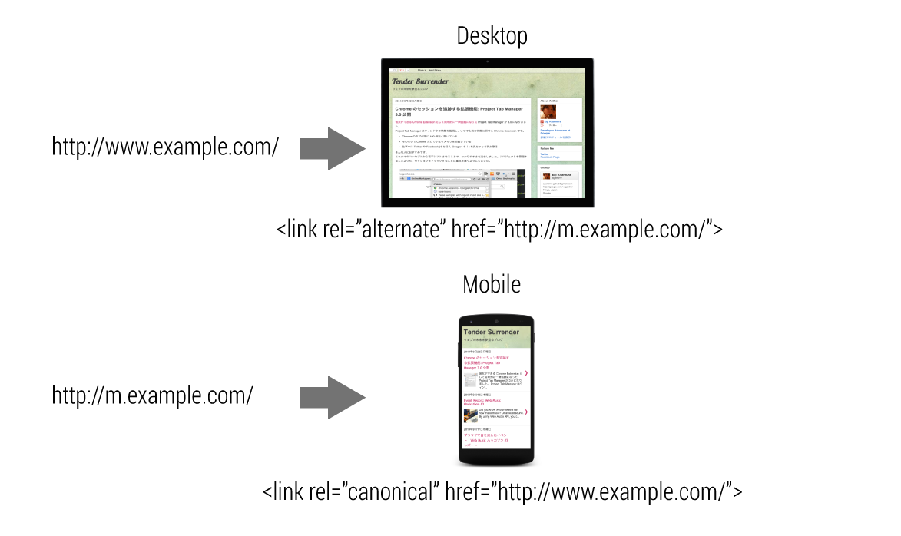

<link rel="stylesheet" href="css/slide.css">

<section id="agenda">
    <h3>agenda</h3>
    <ul>
        <li><a href="#optimization-for-crawlers">Optimizations for Crawlers</a>
        </li>
    </ul>
</section>
</section>
<section>
    <section id="optimization-for-crawlers">
        <h2>Optimizations for Crawlers</h2>
    </section>
</section>
<section>
    <section>
        <h2>Control Appearance on Social Sites</h2>
        <p>You can influence the way your site appears when shared via social media by adding a few lines of code to each page. This can help to bring more people to your site by providing previews with richer information than would otherwise be available.</p>

        <ul>
            <li>Use schema.org microdata to provide page title, description and an image for Google+.</li>
            <li>Use Open Graph Protocol (OGP) to provide page title, description and an image for Facebook.</li>
            <li>Use Twitter Cards to provide page title, description, an image and a Twitter id for Twitter.</li>
        </ul>
    </section>
    <section>
        <p>You can influence the way your site appears when shared via social media by adding a few lines of code to each page. This can help to increase engagement by providing previews with richer information than would otherwise be available. Without it, social sites will provide only basic information, without images or other helpful information.</p>
        <p>Which one do you think is more likely to be clicked? People are drawn to images and feel more confident they’ll like what they find when they have an early preview.</p>
        <p>When someone on a social network wants to share your website with his friends, he would probably add some notes explaining how awesome it is, and share it. But describing your website tends be cumbersome and can miss the point from the page owners aspect. Some services restrict the number of characters users can put in the note.</p>
        <p>By adding the appropriate metadata to your pages, you can help simplify the sharing process for users by providing the title, a description and an attractive image. This means they don’t have to spend valuable time (or characters) describing the link.</p>
    </section>
    <section>
        <h2 id="use-schemaorg--microdata-to-provide-rich-snippets-on-google-crawlers-use">Use schema.org + microdata to provide rich snippets on Google+ Crawlers use</h2>
        <p>many methods to parse a page and understand it’s content. By using <a href="http://www.w3.org/TR/microdata/">microdata</a>, and <a href="https://schema.org/">schema.org</a> vocabulary, you have help social sites and search engines to better understand the contents of the page.</p>
        <p>Here’s an example:</p><pre><code>    &lt;div itemscope itemtype="http://schema.org/Article"&gt;
      &lt;h1 &gt;Enjoy fireworks&lt;/h1&gt;
      &lt;p itemprop="description"&gt;Fireworks are beautiful.
       This article explains how beautiful fireworks are.&lt;/p&gt;
      &lt;img itemprop="image" src="//developers.google.com/web/images/fireworks.jpg" /&gt;
    &lt;/div&gt;
</code></pre>
    </section>
    <section>
        <p>While most metadata are embedded in the head section of a webpage, microdata lives where the context exists.</p>
        <p>By adding <code>itemscope</code>, you can specify the tag as a block of contents about a particular item.</p>
        <p>The type of item can be specified using the <code>itemtype</code> attribute along with the <code>itemscope</code>. The value of an <code>itemtype</code> can be determined according to the type of the content on your webpage. You should be able to find one that is relevant in <a href="http://schema.org/docs/full.html">this page</a>.</p>
        <p><code>itemprop</code>s define properties for <code>itemtype</code>s in the scope. For providing metadata to social sites, typical <code>itemprop</code> values are <code>name</code>, <code>description</code> and <code>image</code>.</p>
    </section>
    <section>
        <p>These microdata provides semantic information to crawlers, typically for <a href="https://plus.google.com/">Google+</a> and Google Search. To learn more about snippets and rendering on Google+, read following documents:</p>
        <ul>
            <li><a href="https://developers.google.com/+/web/snippet/article-rendering">Article Rendering - Google+ Platform</a>
            </li>
            <li><a href="https://developers.google.com/+/web/snippet/">Snippet - Google+ Platform</a>
            </li>
        </ul>
        <p>In order to validate rich snippets on Google+, you can use tools such as:</p>
        <ul>
            <li><a href="http://www.google.com/webmasters/tools/richsnippets">Structured Data Testing Tool</a> - Webmaster Tools</li>
        </ul>
        <p>
        </p>
        <ul>
            <li><a href="https://chrome.google.com/webstore/detail/semantic-inspector/jobakbebljifplmcapcooffdbdmfdbjh/reviews">Semantic inspector</a> - Chrome Extension</li>
        </ul>
        <p>
        </p>
    </section>
    <section>
        <h2 id="use-open-graph-protocol-ogp-to-provide-rich-snippets-on-facebook">Use Open Graph Protocol (OGP) to provide rich snippets on Facebook</h2>
        <p>The <a href="http://ogp.me/">Open Graph Protocol (OGP)</a> provides Facebook with the metadata necessary to allow web pages to have the same functionality as other Facebook objects.</p><pre><code>&lt;html prefix="g: http://ogp.me/ns#"&gt;
  &lt;head&gt;
    &lt;meta property="og:title" content="Enjoy Fireworks"&gt;
    &lt;meta property="og:description" content="Fireworks are beautiful."&gt;
    &lt;meta property="og:image" content="https://example.com/fireworks.png"&gt;
    &lt;meta property="og:url" content="https://example.com/fireworks.html"&gt;
    &lt;meta property="og:type" content="website"&gt;</code></pre>
        <p><a href="http://googlesamples.github.io/web-fundamentals/samples/discovery-and-distribution/optimizations-for-crawlers/social-sites.html">Try full sample</a>
        </p>
    </section>
    <section>
        <p>When included in the head section of your page, this metadata is used for rich snippet information when the page is shared.</p>
        <p>A <code>meta</code> tag consists of a <code>property</code> attribute and a <code>content</code> attribute. Properties and contents take following values:</p>
        <p>These meta tags provide semantic information to crawlers from social sites, typically from <a href="https://plus.google.com/">Google+</a>, <a href="https://www.facebook.com/">Facebook</a>.</p>
        <p>To learn more about things you can attach to the post on Facebook, visit the official Open Graph Protocol site.</p>
        <ul>
            <li><a href="http://ogp.me/">ogp.me</a>
            </li>
        </ul>
        <p>In order to validate your markup on Facebook, you can use tools such as:</p>
        <ul>
            <li><a href="https://developers.facebook.com/tools/debug/">Debugger</a>
            </li>
        </ul>
    </section>
    <section>
        <h2 id="use-twitter-cards-to-provide-rich-snippets-on-twitter">Use Twitter Cards to provide rich snippets on Twitter</h2>
        <p><a href="https://dev.twitter.com/docs/cards">Twitter Cards</a> are an extension to Open <a href="https://twitter.com/">Graph Protocol applicable for Twitter</a>. They allow you to [add media attachments like images and video to Tweets with a link to your [webpage. By adding the appropriate metadata, Tweets with links to your page [will have a card added that includes the rich detail you’ve added.</p>
        <p>In order to get a Twitter Card working, <a href="https://dev.twitter.com/docs/cards/validation/validator">your domain must be approved</a> and must contain a meta tag that has <code>twitter:card</code> as <code>name</code> attribute instead of <code>property</code> attribute.</p>
        <p>Here’s a quick example:</p><pre><code>&lt;html prefix="g: http://ogp.me/ns#"&gt;
  &lt;head&gt;
    &lt;meta property="og:title" content="Enjoy Fireworks"&gt;
    &lt;meta property="og:description" content="Fireworks are beautiful. This ..."&gt;
    &lt;meta property="og:image" content="https://example.com/fireworks.png"&gt;
    &lt;meta property="og:url" content="https://example.com/fireworks.html"&gt;
    &lt;meta property="og:type" content="website"&gt;
    &lt;meta name="twitter:card" content="summary_large_image"&gt;
    &lt;meta name="twitter:site" content="agektmr"&gt;</code></pre>
        <p><a href="http://googlesamples.github.io/web-fundamentals/samples/discovery-and-distribution/optimizations-for-crawlers/social-sites2.html">Try full sample</a>
        </p>
    </section>
    <section>
        <p>By assigning Twitter id as content of twitter:site, Twitter embeds it to the shared post so people can easily engage with the page owner.</p>
        <p>
        </p>
        <p>To learn more about Twitter Cards, visit:</p>
        <ul>
            <li><a href="https://dev.twitter.com/docs/cards">Twitter’s developer site</a>
            </li>
        </ul>
        <p>In order to validate your markup, Twitter provides:</p>
        <ul>
            <li><a href="https://dev.twitter.com/docs/cards/validation/validator">Card Validator</a>
            </li>
        </ul>
    </section>
    <section>
        <h2 id="the-best-practice">The Best Practice</h2>
        <p>Given all three options, the best thing you can do is to include all efficiently in your webpage. Here’s an example:</p><pre><code>&lt;!-- namespace declaration --&gt;
&lt;html prefix="og: http://ogp.me/ns#"&gt;
  &lt;!-- define microdata scope and type --&gt;
  &lt;head itemscope itemtype="http://schema.org/Article"&gt;
    &lt;title&gt;Enjoy Fireworks&lt;/title&gt;
    &lt;!-- define ogp and itemprop of microdata in one line --&gt;
    &lt;meta property="og:title"  content="Enjoy Fireworks"&gt;
    &lt;!-- define ogp image --&gt;
    &lt;meta property="og:image" content="https://example.com/fireworks.png"&gt;
    &lt;!-- use link[href] to define image url for microdata --&gt;
    &lt;link itemprop="image" href="//example.com/fireworks.png"&gt;
    &lt;!-- define ogp and itemprop of microdata in one line --&gt;
    &lt;meta property="og:url" content="//example.com/fireworks.html"&gt;
    &lt;!-- define ogp type --&gt;
    &lt;meta property="og:type" content="website"&gt;
    &lt;!-- define twitter cards type --&gt;
    &lt;meta name="twitter:card" content="summary_large_image"&gt;
    &lt;!-- define site's owner twitter id --&gt;
    &lt;meta name="twitter:site" content="agektmr"&gt;
    &lt;!-- define description for ogp and itemprop of microdata in one line --&gt;
    &lt;meta property="og:description" itemprop="description"
      content="Fireworks are beautiful. Fireworks make loud bangs!"&gt;
    &lt;!-- general description (separate with ogp and microdata) --&gt;
    &lt;meta name="description" 
      content="Fireworks are beautiful and are very loud!"&gt;</code></pre>
        <p><a href="http://googlesamples.github.io/web-fundamentals/samples/discovery-and-distribution/optimizations-for-crawlers/social-sites2.html">Try full sample</a>
        </p>
        <p>Notice that microdata and OGP share some markups:</p>
        <ul>
            <li><code>itemscope</code> is located at <code>head</code> tag</li>
            <li><code>title</code> and <code>description</code> are shared between microdata and OGP</li>
            <li><code>itemprop="image"</code> is using <code>link</code> tag with <code>href</code> attribute instead of reusing <code>meta</code> tag with <code>property="og:image"</code>
            </li>
        </ul>
        <p>Lastly, make sure to validate that your webpage appears as expected on each social sites before publishing them.</p>
    </section>
</section>
<section>
    <section>
        <h2>Instruct Search Engines How Your Multi-Device Page is Structured</h2>
        <p>If your website is targeting multi-devices, how it appears on search results is an important aspect of site design. This guide will help you learn how to optimize your website with search engines depending on its URL structures.</p>

        <ul>
            <li>Determine the URL structure of your webpage</li>
            <li>Responsive design is most recommended</li>
            <li>Use <code>rel="canonical"</code> + <code>rel="alternate"</code> for separate desktop/mobile sites</li>
            <li>Use <code>Vary HTTP</code> header for a single URL dynamically serving separate desktop/mobile HTMLs</li>
        </ul>
        <p>Are you planning to build your webpage responsive? Is there a mobile specific version with a separate URL? Are you serving both desktop version and mobile version from the same URL? You might be able to do a better job optimizing your website for search engines.</p>
    </section>
    <section>
        <h2 id="determine-url-structure-of-your-webpage">Determine URL structure of your webpage</h2>
        <p>There are several ways to serve content to different devices. The three most common methods are:</p>
        <p>The best approach we recommend is to use responsive web design, but a lot of websites already serve mobile specific version. Some serves mobile version using the same URL as desktop.</p>
        <p>Determine which URL structure suits your webpage. Then try respective best practices to optimize it for search engines.</p>
    </section>
    <section>
        <h2 id="responsive-web-design-is-recommended">Responsive Web Design is recommended</h2>
        <p>If you are planning to make your website responsive, you are already good. The benefit of making your website responsive is:</p>
        <ul>
            <li>User friendly for sharing</li>
            <li>Quicker page load without redirects</li>
            <li>Single point of URL for search results</li>
        </ul>
        <p>
        </p>
    </section>
    <section>
        <p>By making it responsive:</p>
        <ul>
            <li>Easier for users to access or share your webpage</li>
            <li>No need to redirect users depending on user agent so it is faster</li>
            <li>Maintenance cost is lower for both website and crawlers</li>
        </ul>
        <p>Learn how to build your website with responsive web design at <a href="https://developers.google.com/web/fundamentals/layouts/">Multi-Device Layouts</a> section.</p>
    </section>
    <section>
        <h3 id="use-linkrelcanonical-and-linkrelalternate-when-serving-from-separate-urls">Use <code>link[rel=canonical]</code> and <code>link[rel=alternate]</code> when serving from separate URLs</h3>
        <p>Serving similar contents on a desktop version and a mobile version at different URLs may cause confusion for both users and search engines because it’s not obvious for viewers that they are intended to be identical. You should indicate:</p>
        <ul>
            <li>Contents of those 2 URLs are identical</li>
            <li>Which is mobile version</li>
            <li>Which is desktop (canonical) version</li>
        </ul>
        <p>This information can help search engines better index content and ensure users find what they’re looking for in a format that works for their device.</p>
    </section>
    <section>
        <p>On desktop page, indicate that there’s a mobile version on a different URL by adding <code>link</code> tag with <code>rel="alternate"</code> pointing to mobile version URL with <code>href</code>. By adding <code>media</code> attribute with value of <code>"only screen and (max-width: 640px)"</code> will help search engines understand that this is explicitly targeting small screens.</p>
        <p><a href="http://www.example.com/">http://www.example.com/</a> HTML</p><pre><code>&lt;title&gt;...&lt;/title&gt;
&lt;link rel="alternate" media="only screen and (max-width: 640px)" href="http://m.example.com/"&gt;</code></pre>
        <p>On mobile specific pages, indicate that there’s a desktop (canonical) version at a different URL by adding <code>link</code> tag with <code>rel="canonical"</code> pointing to desktop version URL with <code>href</code>.</p>
        <p><a href="http://m.example.com/">http://m.example.com/</a> HTML</p><pre><code>&lt;title&gt;...&lt;/title&gt;
&lt;link rel="canonical" href="http://www.example.com/"&gt;</code></pre>
        <p>
        </p>
    </section>
    <section>
        <h2 id="use-vary-http-header-for-device-oriented-serving-site">Use <code>Vary HTTP</code> header for device oriented serving site</h2>
        <p>Serving different HTML based on device type can reduce unnecessary redirects, serves optimized HTML, provides single URL for search engines, but it also has several disadvantages:</p>
        <ul>
            <li>There may be intermediate proxies between user’s browsers and the server. Unless the proxy knows the content varies depending on user agent, it may serve unexpected results.</li>
            <li>Changing contents depending on user agent has a risk to be considered as <a href="https://support.google.com/webmasters/answer/66355">cloaking</a>, a violation of Google’s Webmaster Guidelines.</li>
        </ul>
    </section>
    <section>
        <p>By letting search engines know that the content varies depending on user agent, they can optimize search results for the user agent that is sending queries.</p>
        <p>In order to indicate that the URL serves different HTML depending on user agent, provide <code>Vary: User-Agent</code> in HTTP header.</p>
        <p><a href="http://www.example.com/">http://www.example.com/</a> HTTP Header</p><pre><code data-lang="http">HTTP/1.1 200 OK
Content-Type: text/html
Vary: User-Agent
Content-Length: 5710</code></pre>
        <p>
        </p>
        <p>By providing <code>Vary: User-Agent</code> header, search engines and proxies understand the transferred content may vary depending on user agent. This allows search index to treat desktop version and mobile version separately, intermediate proxies to cache those contents gracefully.</p>
        <p>To learn more about building URL structure across desktop and mobile, read <a href="https://developers.google.com/webmasters/smartphone-sites/">Building Smartphone-Optimized Websites</a>.</p>
    </section>
</section>
